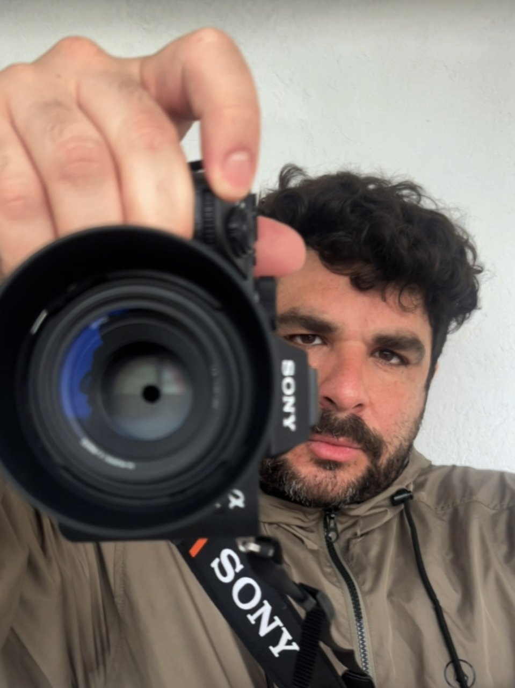

Forte de São Miguel Arcanjo
O sítio clássico para ver as ondas grandes. O farol fica na falésia que separa a Praia do Norte da vila; da esplanada vê-se a onda rebentar de frente.
Ondas grandes · teleobjetiva longaMatías Silva · Fotografia
Durante três anos em Portugal voltei vezes sem conta à Nazaré para conhecer o seu mar, a sua gente e a sua cultura. Estas fotografias são o resultado desse trabalho: as ondas da Praia do Norte, a vida da vila e a luz do Atlântico ao fim da tarde. Cada imagem tem a sua ficha com o lugar e como foi feita.
A Praia do Norte é a praia com as maiores ondas do mundo. O Canhão da Nazaré concentra a energia do Atlântico em frente ao Forte e, no inverno, o mar transforma-se em espetáculo.
Entre a praia e o Sítio vive uma vila piscatória com ruas que descem até ao mar, barcos pintados à mão e muros onde os gatos veem passar as pessoas.
Série
Vivem nos pátios e em cima dos muros. Ninguém os apressa.
A Nazaré está virada a oeste. Todas as tardes o sol põe-se sobre o Atlântico e a vila inteira junta-se nos miradouros para ver.
Onde ficar, quando ir e o que levar. O que aprendi em três anos de idas e voltas.
A Nazaré tem duas faces. A norte da falésia fica a Praia do Norte, a praia aberta onde rebentam as ondas gigantes. A sul, abrigada, a praia da vila com a sua avenida, os barcos e o Sítio lá em cima, ligado pelo ascensor.
Para as ondas, tudo acontece no inverno e depende da previsão. Para a rua e a luz, qualquer época serve: o sol põe-se sobre o mar todo o ano.
Probabilidade por mês na Praia do Norte
O sítio clássico para ver as ondas grandes. O farol fica na falésia que separa a Praia do Norte da vila; da esplanada vê-se a onda rebentar de frente.
Ondas grandes · teleobjetiva longaPara a textura da água e da espuma. Desce-se pelo trilho e convém ficar bem longe da rebentação: nos dias grandes o mar sobe sem avisar.
Detalhe da onda · velocidade rápidaO miradouro sobre a vila. É o lugar para o pôr do sol e para a hora azul, quando se acendem as luzes da avenida.
Pôr do sol e noite · tripéA praia dos barcos tradicionais e as ruas que descem até ao mar. Boa para fotografia de rua de manhã e ao fim da tarde.
Rua e cultura · objetiva fixaA época vai de outubro a março. Novembro, dezembro, janeiro e fevereiro são os meses com mais probabilidade de ondas gigantes. De maio a agosto o mar costuma estar calmo.
Em frente à Praia do Norte há um canhão submarino que concentra a energia das ondulações do Atlântico Norte. Quando chega uma tempestade grande, a onda cresce ao entrar no canhão.
Na esplanada do Forte de São Miguel Arcanjo, sobre a falésia. Nos dias grandes há muita gente e é difícil estacionar, por isso convém chegar cedo.
Para os surfistas, uma teleobjetiva longa, entre 400 e 600 mm, porque muitas ondas rebentam longe. Para a paisagem e a escala do lugar basta uma zoom normal.
É preciso ver a previsão da ondulação: período de 13 segundos ou mais, ondulação de oeste ou noroeste e vento fraco de leste ou sueste. A maré média a subir costuma trazer as séries mais fortes.
Época e previsão: Surfer Today.
Matías Silva, fotógrafo entre San Miguel e a Nazaré.

Sou de San Miguel, Buenos Aires. A Nazaré é a minha segunda casa.
Vivi três anos em Portugal. Parte desse tempo passei-o a morar na Nazaré e, no resto, ia lá sempre que podia para estudar as suas ondas, a sua cultura, a sua gente e a sua energia. Foram três anos a olhar para o mesmo lugar com paciência, e foi daí que nasceu a forma como hoje o fotografo.
Criei o Viva Nazaré, um projeto dedicado às pessoas, à cultura e às ondas gigantes da vila. Sou cofundador do Nazaré Inside, que publica relatos sobre as ondas e a vida local.
Fotografo o mar, a rua e a natureza. Estou a preparar-me para voltar à Nazaré no inverno de 2027 e fotografar a época das ondas grandes a partir do Forte. Este site é o registo desse caminho.
Para colaborações, pedidos de informação ou utilização de fotografias, escreva-me por e-mail ou por mensagem direta.
Elegí el idioma · Choose your language · Escolha o idioma